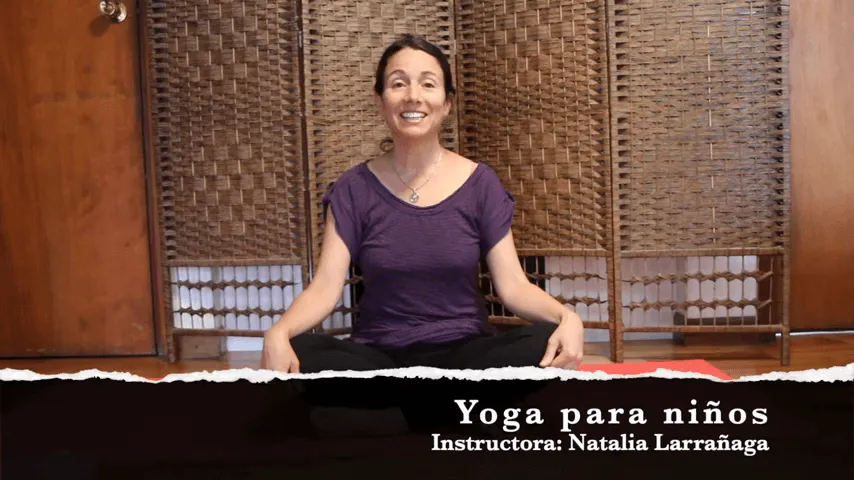

Hoy día Natalia Larrañaga, quien participó en nuestra formación de Yoga Infantil el año pasado, en la ciudad de Montevideo en Uruguay 🇺🇾, ha querido compartir con nuestra comunidad una clase de yoga para los más pequeños 💜
Esperamos que la disfruten!
También pueden seguir a Natalia en su página facebook
